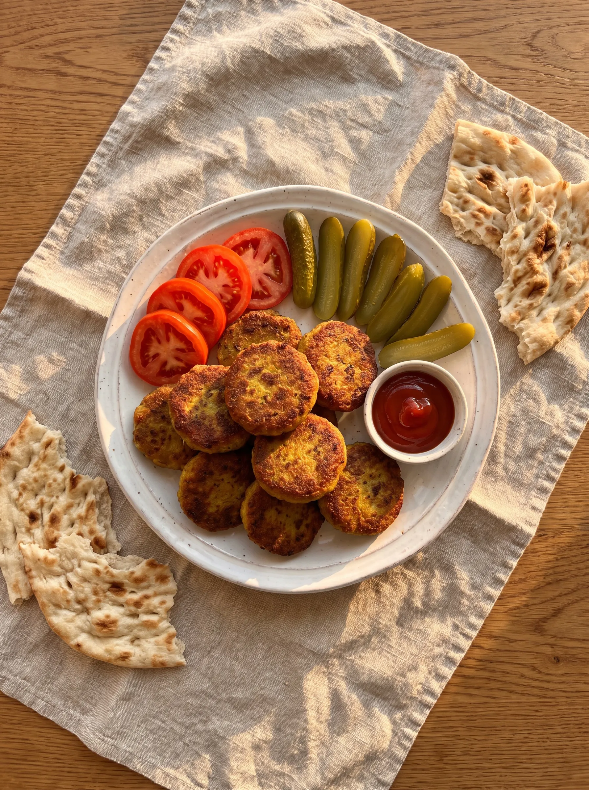
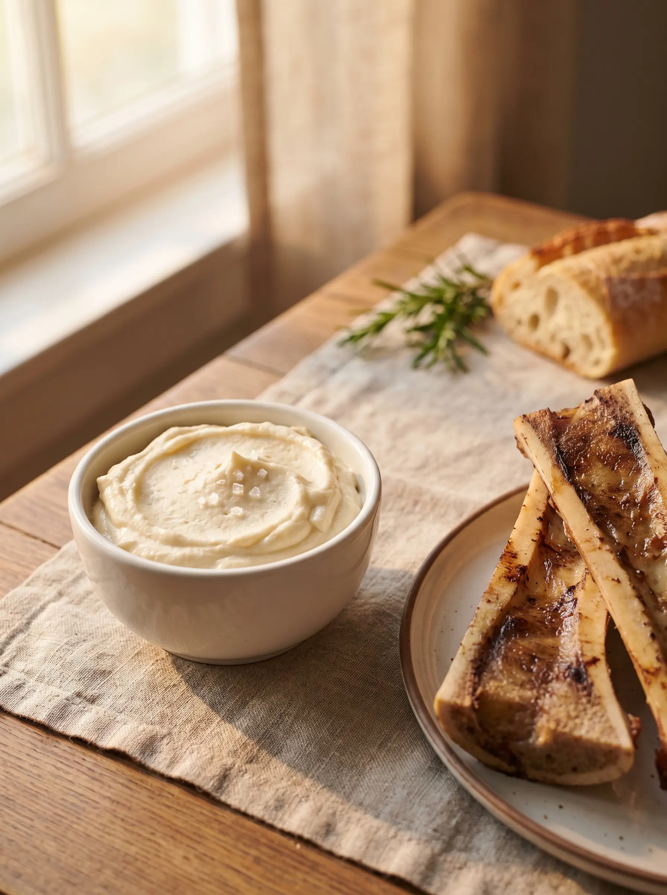
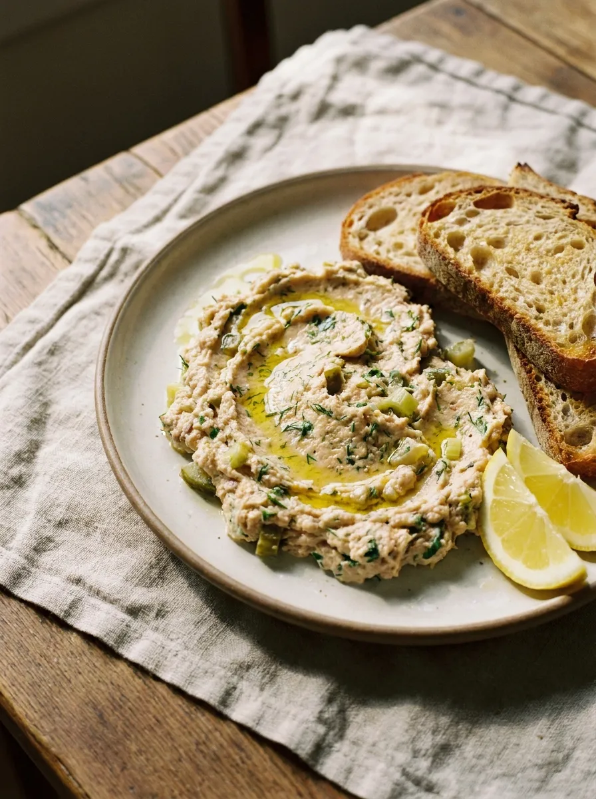
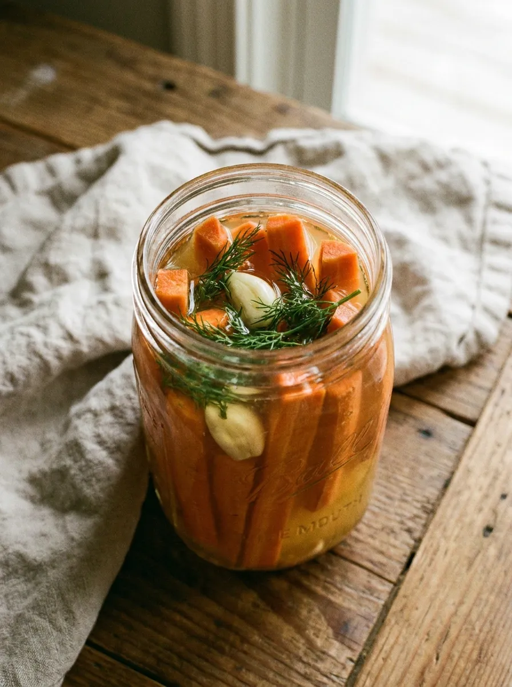
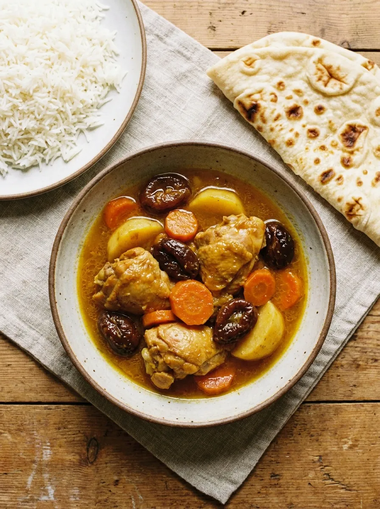
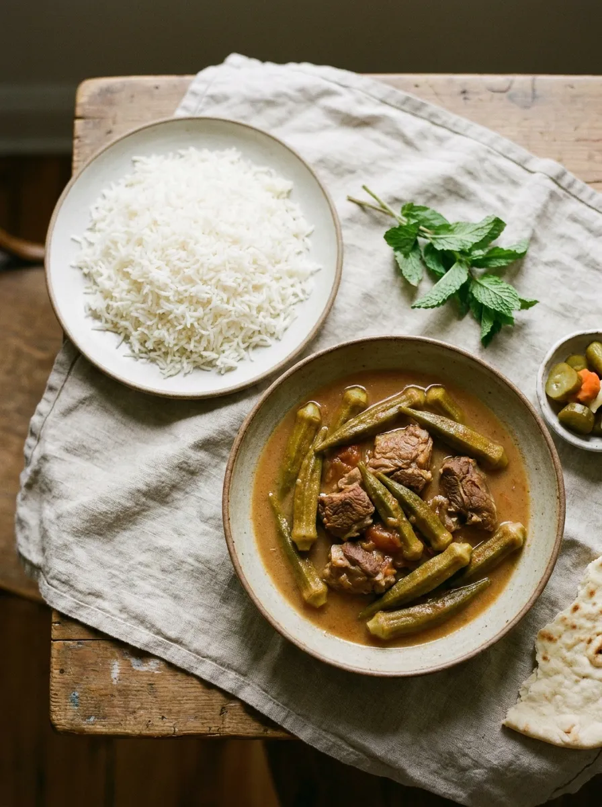

This site is built around one idea: babies thrive on the same real, traditionally prepared food that healthy cultures around the world have eaten for thousands of years. You do not need special products, complicated techniques, or hours in the kitchen. You just need to know where to start.
Where are you right now?
My baby is just starting solids, around 6 months
Start with the simplest, most nourishing first foods: egg yolk, meat stock, liver pate, and soft fats. These are what traditional cultures offered first and what modern research supports most strongly.
See First FoodsMy baby is 9 to 12 months and I want more variety
Your baby is ready for more texture, more flavor, and more of what the family eats. Persian stews, lentil dishes, and soft family meals are perfect at this stage and most of our recipes are built for exactly this.
Browse All RecipesI have a toddler and want meals the whole family shares
The best toddler food is family food. Made with real ingredients, slow-cooked when possible, and served together. Browse Persian family meals, quick weeknight dinners, and one-pot stews that work for every age at the table.
See Family MealsRecipes to start with

Egg Yolk Purée
One of the most nutrient-dense first foods you can offer — rich in choline, DHA, and cholesterol for brain development.

Chicken Liver Pâté
The most nutrient-dense first food you can make — iron, B12, choline, and fat-soluble vitamins in every small serving.

Baby's First Meat Stock
Gentler than bone broth and easier to digest — the most nourishing first liquid for a baby starting solids.

Kotlet
The Iranian comfort food every grandmother makes — crispy outside, tender inside, and on the table in under 30 minutes.

Whipped Bone Marrow
A silky, nutrient-dense spread from roasted grass-fed marrow — stir into any meal for babies, toddlers, and the whole family.

Creamy Sardine Pâté
Packed with omega-3s, calcium, and vitamin D — one of the most nutrient-dense no-cook meals you can offer a baby or toddler.

Ground Meat Patties
Simple, iron-rich patties made with ground beef, lamb, or bison — a family meal ready in under 30 minutes from 9 months.

Lamb & Vegetable Stew
Slow-cooked until fall-apart tender — a nourishing family meal that doubles as perfect baby food from 7 months.

Fermented Dill Carrots
Three ingredients, one jar — a naturally tangy, probiotic-rich toddler favorite. Offer the brine from 6 months.

Persian Chicken with Dried Plums
A comforting one-pot Persian chicken stew with dried plums — naturally sweet-tart, deeply nourishing, baby-friendly.

Okra Stew
A rich Persian tomato-based stew with tender okra and slow-cooked beef — deeply nourishing and full of flavor.

Beef Tongue
One of the most nutrient-dense cuts available — slow-cooked until silky tender and served Persian style.
Three articles to read first
-
1
Fat Is Not the Enemy: Why Your Baby's Brain Needs Animal Fats
The most important thing to understand before starting solids. A baby's brain is 60% fat and the low-fat era did real damage to how we feed our children.
-
2
What Weston A. Price Discovered About How Traditional Cultures Fed Their Babies
The research that underpins everything on this site — a dentist who traveled the world and found that the healthiest children were eating real, traditional food.
-
3
Cod Liver Oil for Kids: Why It Matters and How to Give It
The one supplement worth giving babies and young children — what it contains, why those nutrients matter, and the only brand worth recommending.
I am Iranian-born, a materials engineer, and a mom of two. I cooked real food for my first daughter from the day she started solids. Not because I had extra time, but because once you know a few simple things, it genuinely does not take that long.
The Persian recipes on this site are not restaurant-level authentic. They are grandmother-level practical: fewer ingredients, simpler technique, the same nourishment. Someone should be able to look at the ingredient list and think "I already have almost everything I need." That is the goal.
If you are just starting out, pick one recipe and make it this week. That is enough.
Avishan